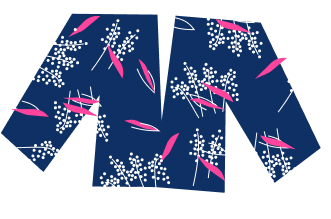
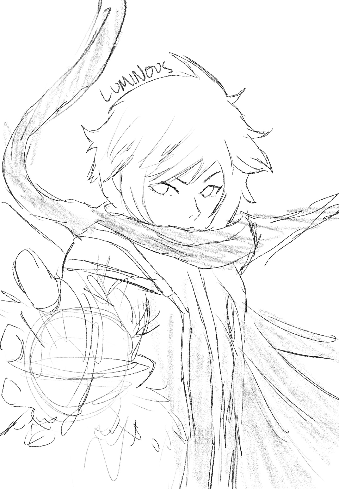

Response 4: Visual Thiknking Analysis Learning Journal
02/11/2020
My theme is what have i thrifted? This blouse is a vintage blouse originating from the 70s? I’ve been thrifting for almost two years now and
this is one of the first things that I’ve ever thrifted. I thrifted this in London when I was studying abroad and it really sparked my interest
in thrifting. Something that might be mysterious about this image might be - what is this blouse’s story? where has it been? Thrifting has allowed
me to have a sustainable hobby while also curating my individuality and developing my personal style.

Jennifer Jeon 2021
My partner, Michelle, is doing her project on video games. For her image, she chose to draw all of them. She says:
"This character is named “Luminous”, from the game Maplestory. I have always loved playing video games so I’m doing my project
on the collection of my favorite games, and Maplestory played a big part in my life. Maplestory helped me socialize, as I have always
been a shy and timid person. I’ve made countless of friends in that game and I’m glad to have been able to face my social anxiety through
Maplestory. I also like to draw, so I wanted to combine both art and video games together, and I want my collection to show my love for both."

Michelle Lin 2021
Response 3: 10 Intriguing Photographs to Teach Close Reading and Visual Thinking Skills
02/04/2020
We Design Demand is an experience by Digital Surgeons, a creative consultancy
based in the United States. It shows the capabilities, core values, and advertises the services of this consultancy.
This website uses compelling images, interactions prompted by the user scrolling, and adheres to a sleek, clean visual identity
that captivates the user and persuades the user to utilize their services.
Specifically, I found the scrolling interactions to be quite delightful; In some interactions, as the user would
scroll, a marble bust would continuously break into pieces. In addition, in another part, the scrolling action would allow for an in-site scroll
within a sketch of a desktop or a mobile interface, showing the capabilities of their ux design skills. To use the space effectively, sometimes a vertical scroll
would scroll horizontally instead. Overall, it was super cool to scroll through this website and see how Javascript works to trigger certain actions with a scroll.
Response 2: Best Practices for Modals/ Overlays/ Dialog Windows
01/27/2020
Overlays are used especially to draw a user's attention while they scroll on a website. Maybe they are used
to prompt the user to sign up for a newsletter, or they can be used to show relevant information. The overlay
can be quite annoying at times; however, its original intention was interestingly enough used to solve a UI
problem.
In her medium article
Best Practices for Modals/ Overlays/ Dialog Windows , Naema Baskanderi goes over best practices in using modals and overlays
so as to not annoy the user too much. Indeed, she encourages the designer to avoid using the modal as they do tend to interrupt
the user flow and impede user interaction. She encourages the user to think about when to use the modal, how to show the modal,
and what information should be presented and collected. She emphasizes the importance of not using modals to show error messages,
and to make it as easy as possible to complete the prompted task in the modal (or to close the modal!). She also touches on the importance
of accessibility when designing modals: keep in mind of keyboard accessibility and be sure to incorporate that into the design.
Response 1: Best Practices for Form Design
01/20/2021
Forms permeate our life. Whether it be in the form of ballots voting for elected officials
or filling out an order form to purchase Girl Scout cookies, forms are valuable ways of collecting
information from masses of people. However, they can be quite annoying to fill out,
especially if they are long and require multiple responses.
However, as product designers, we are tasked with making forms as accessible and usable as possible.
Salim Ansari enumerates in his article Best Practices for Form Design 20 different ways forms can be
both more usable and easy to navigate. His article not only focuses on the UI of forms, but also on the
wording on the form itself. It is important to consider visual hierarchy and to avoid harsh designs that
may deter the user. In addition, he emphasizes the importance of decreasing the cognitive load
and to focus on relevant information to encourage users to complete the form.
Ultimately, it is important to consider accessibility and usability not only in forms, but in all aspects
of user experience. As forms can be quite a pain point for users, it is important that product designers focus
their attention on making such forms more accessible to all users.